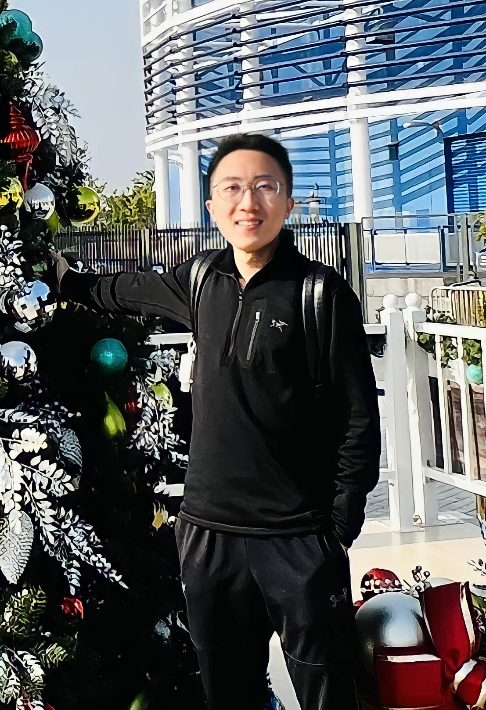

Bio

I am a first-year M.Phil. student in Computer Science at City University of Hong Kong, where I am fortunate to be advised by Dr. Shiqi Wang. In summer 2017, I attended a summer school at University of California, Irvine in CA, USA. Prior to joining CityU, I received my bachelor's degree at Northeast Electric Power University in Jilin, China, supervised by Prof. Yimin Hou.
My research focuses on Computer Vision and Machine Learning, and my current concentration is Image Quality Assessment and Perceptual Optimization. I always aim to use what I have learned to bring a positive impact on people's lives.
Some of my paper survey and presentations can be found
here
Graph Neural Network (GNN)
Dynamic Graph Convolutional Neural Networks Survey
Graph Convolutional Neural Networks (Chebyshev Approximation)
Natural Language Processing (NLP)
Graph Matching
Sub-word BPE Algorithm for NMT
Concept Matching for Medical Terms
Computer Vision (CV)
Deep Learning Models Compression and Acceleration
3D Human Pose Estimation and Human Body Reconstruction
YOLO Object Detection
Other Tutorials
Usage of Cloud Server and Setting-up
Python Environment Setting-up
TensorFlow for Deep Learning
Email: shuyuej@ieee.org or shuyue.jia@my.cityu.edu.hk
Scholar
Résumé
GitHub
News
- Oct 2020 Recommendation System Intern at Tencent Video, Beijing.
- Jul 2020 NLP Intern at Philips Research, Shanghai.
-
Apr 2020 Open Source EEG-DL,
a Deep Learning (DL) library written by TensorFlow for EEG Signals Classification (Undergraduate Thesis Project)
.
-
Feb 2020 One Paper
accepted by Journal of Neural Engineering
.
- Jun 2019 Summer Intern at Tsinghua University, Beijing.
Publications
-
A Novel Approach of Decoding EEG Four-Class Motor Imagery Tasks via Scout ESI and CNN
Yimin Hou, Lu Zhou, Shuyue Jia, and Xiangmin Lun
Journal of Neural Engineering, 2020; 17(1):016048.
See More
We presented a novel approach that could potentially be used to improve the current stroke rehabilitation
strategies by implementing a deep learning approach for an Electroencephalogram (EEG) based on MI Brain-Computer Interface System.
-
Constructed 6 convolutional layers, 2 max-pooling layers, and 3 FC layers CNNs for four-class motor
imagery classification through TensorFlow, with 50% dropout (spatial dropout after every Conv layer and regular
dropout for FC layers) – 11.44% accuracy improvement, batch normalization (BN) – 10.15% improvement, and Short-cut
Connection – 1.76% improvement to prevent overfitting, and achieved SOTA results: 94.50% accuracy on scout R5,
94.54% at subject level, and 96% for left fist prediction.
-
Took charge of DNNs design, including methods comparisons, such as MLPs, CNNs, RNNs, LSTMs, and Autoencoders,
classification results calculations, and programming. 10 and 14 subjects’ data were utilized (19,320 and
27,048 samples in the experiments)
-
Benchmark Dataset: EEG Motor Movement/Imagery Dataset.
-
GCNs-Net: A Graph Convolutional Neural Network Approach for Decoding Time-resolved EEG Motor Imagery Signals
Xiangmin Lun, Shuyue Jia *, Yimin Hou, Yan Shi, and Yang Li
arXiv preprint arXiv:2006.08924, 2020.
See More
Based on the Graph Convolutional Neural Network (Graph CNN / GCN), the GCNs-Net was introduced, which filtered the EEG Motor
Imagery (MI) signals considering the functional topological relationship of EEG electrodes.
-
At the subject and group level (subject-specific adaptation), 98.72% and 89.387% accuracy were achieved, respectively.
-
Pearson’s Matrix was applied to measure the correlations among channels, and represented the graph structure, i.e., graph weights and degrees.
-
Benchmark Datasets: EEG Motor
Movement/Imagery Dataset, in which 20 ( a million samples), 50, 100 participants’ data were used, and
the High-Gamma Dataset, in which 14
participates' data were used.
-
Deep Feature Mining via Attention-based BiLSTM-GCN for Human Motor Imagery Recognition
Yimin Hou, Shuyue Jia *, Xiangmin Lun, Yan Shi, and Yang Li
arXiv preprint arXiv:2005.00777, 2020.
See More
We introduced a novel approach which combined Attention-based BiLSTM with the Graph Convolutional Neural Network
(Graph CNN / GCN). The method has achieved SOTA results.
-
Open Source EEG-DL, a Deep Learning (DL)
library written by TensorFlow for EEG Tasks (Signals) Classification.
-
Attention-based BiLSTM was firstly used to extract features from raw EEG signals. The
followed GCN model classified the features regarding to four EEG Motor Imagery (MI) tasks, imagining left fist, right fist,
both fists, and both feet.
-
98.81% and 94.64% accuracies have been achieved for the individual subject and a group of 20 subjects.
-
Benchmark Dataset: EEG Motor Movement/Imagery Dataset.
-
Attention-based Graph ResNet for Motor Intent Detection from Raw EEG signals
Shuyue Jia, Yimin Hou, Yan Shi, and Yang Li
arXiv preprint arXiv:2007.13484, 2020.
-
Origin Traceability of Rice based on an Electronic Nose coupled with a Feature Reduction Strategy
Yan Shi, Xiaofei Jia, Hangcheng Yuan, Shuyue Jia, Jingjing Liu, and Hong Men
Measurement Science and Technology, 2020; 32(2):025107.
-
Improving Performance: a Collaborative Strategy for the Multi-data Fusion of Electronic Nose and Hyperspectral to Track the Quality Difference of Rice
Yan Shi, Hangcheng Yuan, Chenao Xiong, Shuyue Jia, Jingjing Liu, and Hong Men
Sensors & Actuators: B. Chemical, 2021; 129546.
* denotes the Corresponding Author.
Academic Services
- Reviewer for IEEE Journal of Biomedical and Health Informatics
- Student Member of IEEE, ACM, and CCF
Selected Awards
-
2019 Interdisciplinary Contest In Modeling
Honorable Mention
-
2018 Mathematical Contest In Modeling (Jilin, China)
First Prize
-
2018 Interdisciplinary Contest In Modeling
Successful Participant